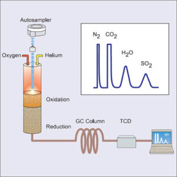
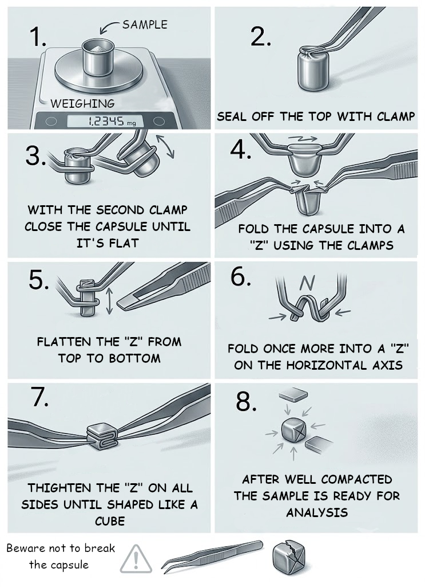

CHNS Analysis

| CHNS Analysis | |
|---|---|
| Method: | Elemental Analysis |
| Equipment: | Flashsmart Elemental Analyzer |
| Technician: | Rodrigo Borges |
| Average Time: | 1 hour + 10 mins per run |
| Sample Amount: | 2 - 5 mg per replicate |
CHNS elemental analysis enables the quantitative determination of Carbon (C), Hydrogen (H), Nitrogen (N), and Sulfur (S) contents present in a sample. The technique is based on the complete combustion of the sample in an oxygen-rich atmosphere, followed by the separation and quantification of combustion gases, allowing the determination of elemental composition with high precision, accuracy, and reproducibility.
The determination of elemental composition is one of the most widely used analytical tools for the characterization of organic materials and various environmental matrices, being essential for studies involving biomass, microalgae, plants, soils, sediments, food products, polymers, pharmaceuticals, and fuels. The results obtained enable the assessment of the chemical composition of samples, the calculation of elemental ratios (such as C/N), the estimation of protein content through nitrogen determination, the evaluation of biomass quality parameters, and support studies on biogeochemical cycles, nutrition, ecology, and waste valorization.
Sample Preparation
For sample preparation, users should contact the technician Rodrigo Borges to request the appropriate number of tin capsules.
Solid Samples
Solid samples should be previously dried and ground to ensure their homogeneity. For each tin capsule, between 2 and 5 mg of sample should be weighed. Weighing must be performed with the utmost care, as the low sample mass makes accurate weight determination essential for the correct calculation of elemental composition.
Important: Special attention should be given to the amount of sample introduced into the capsule, as an excessive quantity of material may cause the capsule to rupture during sealing.
Liquid Samples
When analysing liquid samples with low element concentrations, these should be previously concentrated, and the concentration factor used must be recorded. The presence of water does not interfere with the analysis, as the moisture produced during combustion is removed by a soda lime and anhydrous magnesium perchlorate column.
Between 2 and 5 mg of the liquid sample should be weighed into the tin capsule using a micropipette. This operation can be easily performed using, for example, a 20 µL micropipette, by dispensing approximately 3 µL of sample and accurately recording the obtained mass.
Sulphur Analysis
For sulfur determination, users should also request the reagent Vanadium(V) pentoxide (V2O5) from the technician. Approximately 10 mg of this compound should be added to the tin capsule together with the sample. Vanadium(V) pentoxide acts as a combustion promoter, ensuring complete sulfur oxidation and improving the quality of the analytical results.
Important: Due to the increase in volume inside the capsule, its addition may hinder the proper sealing of the tin capsule. Therefore, special care is recommended during this stage of sample preparation.
Capsule Preparation
After weighing the sample, the tin capsule should be carefully sealed as illustrated in the image below:

For the first request of this analysis, the technician Rodrigo Borges will provide an in-person demonstration of the correct sample preparation procedure. Additional tin capsules will also be made available for practice, as the proper handling and sealing of samples is a step that requires some practice and dexterity.
Analysis Specifications:
| Method: | Dumas (flash combustion) |
| Analyzed Elements: | Carbon, Nitrogen, Hidrogen and Sulphur |
| Carrier Gas: | Helium |
| Detector: | Thermal Condutivicty (TCD) |
| Advised Replicate Number: | 3 |
| Average Runtime: | 10 minutes |
Detection / Quantification Limits:
| Element | LOD | LOQ |
|---|---|---|
| Carbon | - | 0.201 mg |
| Hidrogen | - | 0.047 mg |
| Nitrogen | - | 0.037 mg |
| Sulphur | - | 0.108 mg |
Provided Results
- % Carbon
- % Hidrogen
- % Nitrogen
- % Sulphur (optional)
- C/N Ratio (optional)
- Protein content (when applicable)
- Mean and standard deviation
- Chromatogram (if requested)
Types of Sample
- Solid Samples;
- Liquid Samples;
- Highly volatile compounds;
- Explosive materials;
- Corrosive samples;
- Radioactive samples;